6. Smooth Curves And Surfaces
The shape representation we have considered so far approximates surfaces with triangles and curves with line segments. This representation is general and scalable and works well for rendering applications. For other applications though, such as shape editing, continuos shape representations are more effective. In this chapter, we discuss representations for smooth curves and surfaces that complement lines and triangles.
6.1. Splines
When discussing shapes, we introduced parametric representation and gave a few examples of shapes for which an analytic representation is possible, for example circles in two dimensions and spheres in three dimensions. In general though, analytics representations are not possible for the vast majority of real-world shapes. We then discuss the use of lines and triangles to approximate shapes using piece-wise linear representations. These representations work quite well for rendering, but are not ideal when designers need to edit shapes.
Consider a designer that wants to draw the boundary of a curved shape, like an icon or a character glyph in a font. For the shape to appear smooth, we need to approximate it with many line segments. But while editing, the designer would have to move all these segments together to obtain the desired shape. Needless to say, this is not practical. A better alternative is to define curves that smoothly approximate a small number of control points, as shown in Figure 6.1.
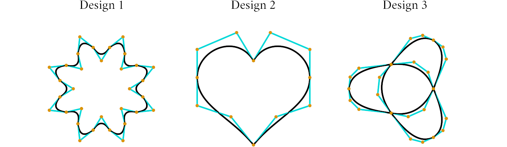
Figure 6.1. Smooth curves defined by approximating a set of control points. Here we show the curve in black, the control points in orange and the control polygon in blue.
Different definition of the smooth curve are used in different applications. The choice depends on the desired property that the resulting curve should have. For design applications, we want curves that are continuos in both their position and tangents, that are intuitive to manipulate, and that are cheap to compute with. Splines are a family of curves that fulfills all these requirements.
A spline is a curve whose points can be written as weighted averages of a set of control points. The weights are functions, called basis functions, parametrized by a value that ranges from zero to one. For splines the basis functions are polynomials. Depending on the choice of polynomial degrees and coefficients, we obtain different types of splines.
6.2. Bézier Splines
The most commonly used splines are the ones introduced by Pierre Bézier. Bézier splines are defined as the weighted sum of \(n+1\) control points \(\mathbf{p}_i\) scaled by the basis functions \(b_i^n(u)\). The basis functions are polynomials of degree \(n\) defined to be zero outside the interval \([0,1]\) and to sum to one in the interval. In this chapter, we use the notation \(\mathbf{p}^n(u, \{\mathbf{p}_0,...,\mathbf{p}_n\})\) to indicate a Bézier spline of \(n\) degree with control points \(\{\mathbf{p}_0,...,\mathbf{p}_n\}\), and write its definition as
For Bézier splines, the basis functions \(b_i^n(u)\) are the Bernstein polynomials defined as
To gain some intuition, we plot the basis functions for the first three degrees in Figure 6.2, and write them explicitly as
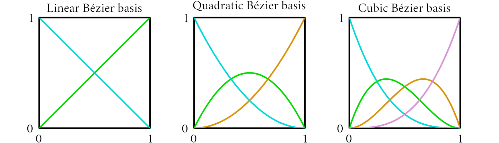
Figure 6.2. Basis functions for linear, quadratic and cubic Bézier splines.
We obtain curves with different properties by changing the number of control points, or equivalently the degree of the polynomial. The simplest Bézier spline, corresponding to a degree one polynomial, is a line segment, that is the weighted average of its two control points. In this case, the basis functions are just linear interpolation. To achieve better control, we normally use curves of higher degree. In the case of three and four control points, the basis functions are quadratic and cubic polynomials respectively. In all these cases, Bézier splines pass through the first and last control point, while the other points controls the middle part of the curve. Examples of linear, quadratic and cubic Bézier splines are shown in Figure 6.3.
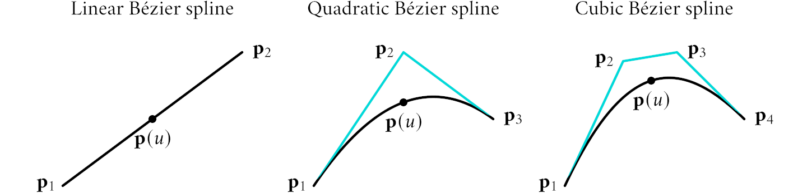
Figure 6.3. Points on linear, quadratic and cubic Bézier splines are computed as weighted averages of their control points. All curves pass through their end-points, while the other points control the middle of the curve in the quadratic and cubic case.
Both quadratic and cubic curves draw straight lines if all their control points are aligned. Quadratic curves never self-intersect while cubic curves may self-intersect and may show cusps. We will not derive this property here but show more examples of cubic splines in Figure 6.4.
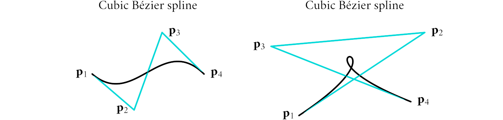
Figure 6.4. Example of cubic Bézier splines. Cubic Béziers splines may have self-intersections and cusps.
Higher-order Bézier splines are also possible, but are rarely used in practice. Figure 6.5 shows examples of Bézier splines with five to seven control points. The main reason for not using higher-order Bézier splines is that they are harder to control. For example, the curve in Figure 6.5 is controlled by six points, but moving one point changes the whole curve. This is not ideal for design applications.
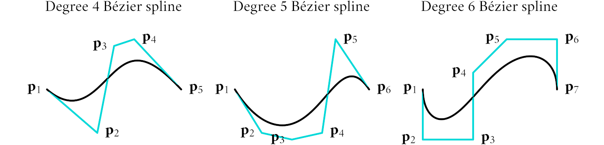
Figure 6.5. Bézier splines with five to seven control points, corresponding to polynomials of degree four to six.
Many geometric properties of Bézier splines comes from the algebraic properties of their basis functions. The first useful property is that Bernstein polynomials are positive in the interval \([0,1]\) and sum to one in that interval. We can summarize these properties by writing
From the previous properties, we can easily show that Bézier splines are affine-invariant, meaning that, for affine transformations, the curve obtained by transforming points on the curve is the same as the curve obtained by transforming the control points. This comes from the fact that Bernstein polynomials sum to one. If we write an affine transformation as \(\mathbf{F} = [\mathbf{M}, \mathbf{t}]\), we can show the affine-invariant property by substitution as
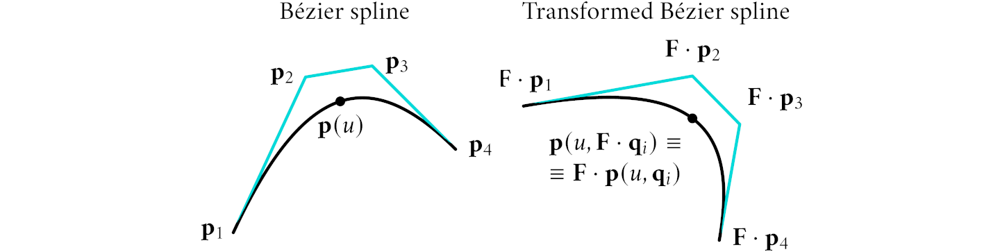
Figure 6.6. Transformed Bézier splines can be obtained by transforming their control points.
Since the basis functions are always positive and sum to one, the curve point is a convex sum of the control points. This means that Bézier splines lie within the convex hull of the control points, as shown in Figure 6.7. The convex hull is the smallest convex polygon that contains a set of points. This property also implies that the bounding box of a Bézier spline is contained in the bounding box of its control points.
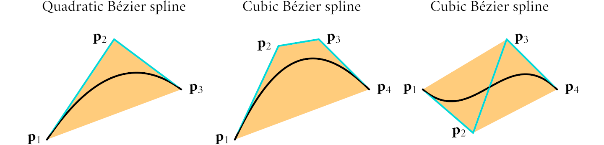
Figure 6.7. Bézier splines are contained in the convex hulls of their control points.
The basis functions are also symmetric with respect to the order of control points, meaning that the curve obtained by inverting the order of control points is the same as the curve obtained by evaluating the spline at one minus the parameter. In term of basis functions, we can state that \(b_i^n(u) = b_{n-i}^n(1-u)\). We can show this by substituting the index \(n-i\) in the basis function \(b_i^n\) as
From this property, we can easily show that Bézier splines are symmetric with respect to the order of control points. We proceed again by substitution as
Tangents of Bézier splines can be computed by deriving the curve expression with respect to its parameter. For Bézier splines of \(n\) degree, the tangent is a polynomial of degree \(n-1\). We can derive the tangent by substituting the Bernstein polynomials with their derivatives. Since these are simple substitutions, we omit them here and just write the final expression for the tangent as
Note that this means that the tangent at the end points of a Bézier spline are parallel to the line connecting the end points to the adjacent points. This is shown in Figure 6.8, and can be written as
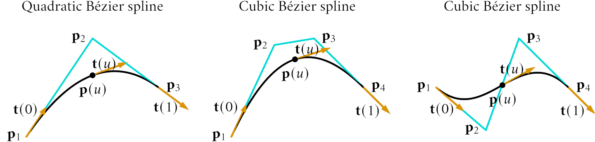
Figure 6.8. The tangents at the end points of Bézier splines.
Let us now think about why these properties help in our editing applications. The fact that Bézier splines are controlled only by points means that a single user interface, used to manipulated points, is sufficient to model the whole curve. Tangents are controlled directly by the middle points, and do not require any special treatment in the user interface. The convex hull property means curves are easy to control, since editing control points have predictable behavior. The transform property means curves can be transformed without the need for a specialized user interface since we just manipulate their control points.
6.3. Joining Bézier Splines
As we add more control points, Bézier splines becomes less effective. The cost of evaluating the curves grows with the curve order. More importantly, the curve becomes harder to control since moving one point modifies the whole curve. The most practical alternative is to assemble longer curves by joining together multiple low-degree curves.
A convenient way to write this is to consider the curve \(\mathbf{p}^n(u, \{ \mathbf{p}_{k,i} \})\) defined for \(u \in [0,m]\), where \(m\) is the number of segments. For each interval \(u \in [k, k+1]\), with \(k \in [0, m]\), the curve correspond to a low-degree Bézier spline \(\mathbf{p}_k^n(u-k, \mathbf{p}_{k,0}, ..., \mathbf{p}_{k,n})\) defined by a different set of control points \(\{ \mathbf{p}_{0,k}, ..., \mathbf{p}_{n,k} \}\). We can write the curve more precisely as
We impose constraints on the control points to ensure that the curve has continuos positions and tangents at the joints. In general, we say that a curve is \(\mathcal{C}^k\) continuos if its derivatives up to order \(k\) are continuos. For Bézier splines, this means that the curve is \(\mathcal{C}^0\) continuos if the end points of consecutive segments are equal. The curve is \(\mathcal{C}^1\) continuos if the tangents at the end points of consecutive segments are equal. Using the expressions for the tangents at the end points that we derived before, we can write the position and tangent constraints, shown in Figure 6.9 and Figure 6.10 , as
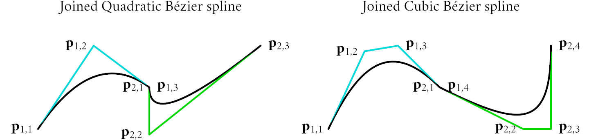
Figure 6.9. We model longer curves by joining spline segments.
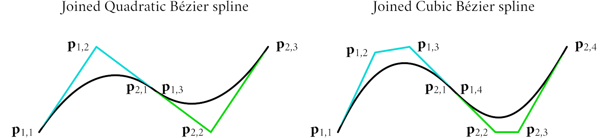
Figure 6.10. By aligning curve tangents, we obtain smooth spline curves.
In design applications, the main property that joined spline exhibit is local control, meaning that moving one control point changes a curve only locally. This is obviously true for joined splines since each segment is independent to the others, as shown in Figure 6.11.
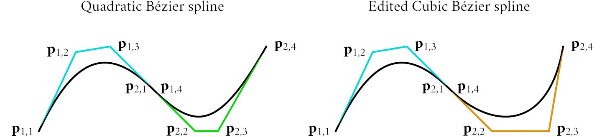
Figure 6.11. Joined Bézier spline have local control since we edit at most two segments at a time.
6.4. Splitting Bézier Splines
It is often necessary to convert splines into line segments, for example for rendering. The simplest method is to evaluated the spline at fixed intervals in the parameter domain and connect consecutive points. This is called uniform subdivision. For a resolution of \(s\) segments, we can write the \(s+1\) line points \(\mathbf{p}[i]\), shown in Figure 6.12, as
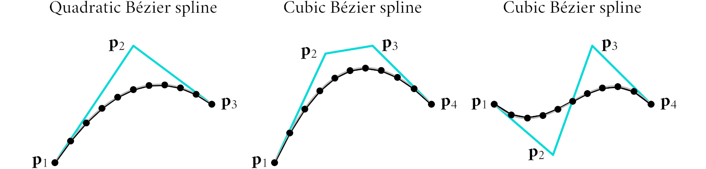
Figure 6.12. A simple way to convert a Bézier spline into line segments is to evaluate the spline at equally-sized intervals in the spline parameter.
Uniform subdivision is fast to execute and works relatively well, but generates a number of segments that does not depend on how curved the spline is. A better alternative is to split the spline recursively and stop recursion when a stopping criterion is met, for example when the control points are aligned enough that the control polygon is a good approximation of the curve. This is a form of adaptive subdivision. The main advantage of adaptive subdivision is that it generates a number of segments that depends on the curvature of the curve. The main disadvantage is that it is more expensive to evaluate.
An elegant way to adaptively subdivide a spline can be derived from the recursive definition of Bézier splines. It can be shown by substitution that a Bézier spline of degree \(n\) can be written as a linear combination of two Bézier splines of degree \(n-1\), defined by the first \(n\) and last \(n\) control points respectively. We complete the recursive definition with the base case of a Bézier spline of degree zero that corresponds to a single control point. We can write the recursive definition as
From this relationship, we can derive a recursive method to evaluate a Bézier spline at a given parameter value. Let us consider a Bézier spline of degree \(n\), with control points \(\{ \mathbf{p}_0, ..., \mathbf{p}_n \}\). We indicate as \(\mathbf{p}_i^m(u)\) a point on a Bézier spline of degree \(m\) with control points starting at the \(i\)-th control point, written as \(\mathbf{p}_i^m(u) = \mathbf{p}^m(u, \{ \mathbf{p}_i, ..., \mathbf{p}_{i+m} \})\). The recursive definition states that we can compute the point \(\mathbf{p}_i^m(u)\) by linear interpolation of the points \(\mathbf{p}_i^{m-1}(u)\) and \(\mathbf{p}_{i+1}^{m-1}(u)\) on two consecutive lower-degree splines. More precisely, we can write
From the previous definition, we can derive a recursive method to evaluate points on a Bézier spline. We start by considering the single control points \(\mathbf{p}_i\) as points on \(n\) zero-degree splines \(\mathbf{p}_i^0=\mathbf{p}_i\). We then compute the points \(\mathbf{p}_i^1(u) = (1-u)\mathbf{p}_i^0 + u\mathbf{p}_{i+1}^0\) that corresponds to points on the segments formed by consecutive pairs of points \((\mathbf{p}_i^0, \mathbf{p}_{i+1}^0)\). From this new sets of points, we compute the points \(\mathbf{p}_i^2(u)\) that correspond to points on consecutive segments formed by pairs of points \((\mathbf{p}_i^1, \mathbf{p}_{i+1}^1)\). We continue this process until we compute the desired point \(\mathbf{p}^n(u) = \mathbf{p}_0^n(u)\). This recursive procedure, called the de Casteljau algorithm, is illustrated in Figure 6.13.
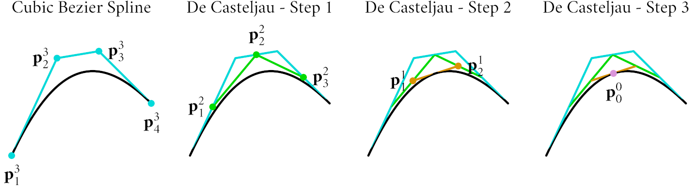
Figure 6.13. Steps for the de Casteljau algorithm applied to a cubic spline.
The de Casteljau algorithm has the advantage that it can be used to evaluate spline points with higher numerical precision compared to the direct evaluation of the Bernstein polynomials. This matter mostly for high degree splines, while it is not as significant for lower degree one, such as the ones mostly used in graphics.
The most common use of the de Casteljau algorithm is instead related to spline splitting. In particular, it can be shown, that an \(n\)-degree Bézier spline \(\mathbf{p}^n(u, \{ \mathbf{p}_0, ..., \mathbf{p}_n \})\) can be split at the position \(\mathbf{p}^n(u_s)\) into two consecutive splines, of the same degree, with control points \(\{ \mathbf{p}_0^i(u) \}\) and \(\{ \mathbf{p}_i^{n-i}(u) \}\) computed by the de Casteljau algorithm. This is illustrated in Figure 6.14, and can be written as
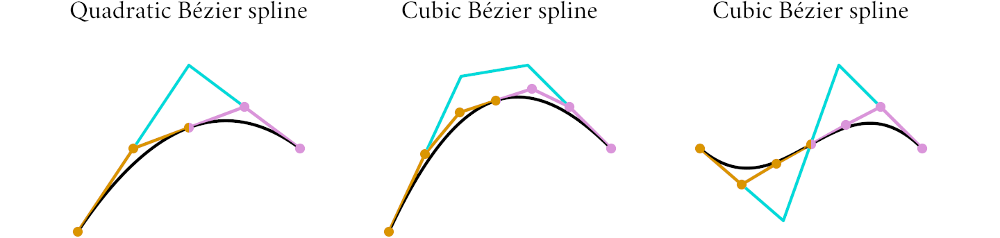
Figure 6.14. De Casteljau splits for quadratic and cubic splines.
Splitting splines is helpful in design applications where a user might want to refine a spline to gain better control by adding control points, without changing the curve shape. It is also useful as an alternative to uniform tesselatation to generate line segments for rendering. This is shown in Figure 6.15. The main advantage of subdivision over uniform tesselation is that the number of segments may depend on the curvature of the curve. For example, in adaptive subdivision a spline is split recursively until the control points are either close enough or sufficiently aligned. This results in a set of smaller splines that can be converted to line segment by simply taking the sides of the control polygon. For splines that are nearly flat, this generates a set of segments that is significantly smaller than uniform subdivision.
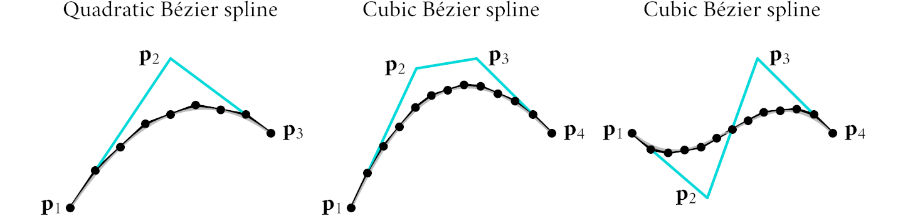
Figure 6.15. Subdivision of Bezier splines.
6.5. Bézier Splines in Design Applications
Bézier splines are the fundamental primitive of two-dimensional drawing applications. They are the base of both design software as well as rendering in user interfaces and digital documents. Such a wide applicability comes from their many properties. Bézier splines are simple to implement, efficient to compute with, and intuitive for designers to handle. Just like raster images, they are literally the base of a whole industry. For example, Bézier splines are used to define the outline of digital fonts, and are the curve implementation used in vector drawing programs and in the SVG and PDF formats, as shown in Figure 6.16 and Figure 6.17.
From a designer perspective, the main difference between quadratic and cubic curves is control. Quadratic curves are simpler, but can reproduce a smaller range of curves. Cubic curves give more control, but can produce possibly unwanted configurations, like cusps and intersections. Cubic splines are the most used in practice since thy are the base of most vector drawing programs. Quadratic splines are used extensively to draw fonts, albeit also cubic splines can be used there.
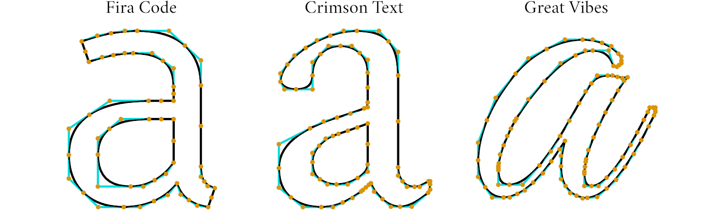
Figure 6.16. Example of the use of quadratic Bézier splines to draw fonts. Glyphs from the fonts Fira Code, Crimson Text and Great Vibes from Google Fonts.
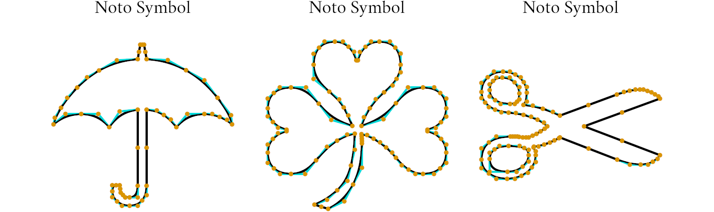
Figure 6.17. Example of the use of Bézier splines to draw icons. Icons from the font Noto Symbol from Google Fonts.
6.6. Catmull-Rom Splines
Bézier splines belong to the class of approximating splines, meaning that they pass through all their control points. This is not always desirable, for example when we want to smoothly interpolate a set of points, such as drawing hair or fur guided by a set of control points. For these problems, we often prefer to use interpolating splines, that pass through a set of points. If we chose to use low-degree polynomial splines for interpolation, we can derive a new class of splines that can be written in terms of Bézier splines.
Let us consider a set of \(m+1\) points \(\{ \mathbf{p}_0, ..., \mathbf{p}_m \}\) that we want to interpolate. A naive way to interpolate these points is to use a piecewise linear curve formed by \(m\) consecutive segments connecting two adjacent points \((\mathbf{p}_j\), \(\mathbf{p}_{j+1})\). We can write this curve by defining its \(m\) segments as the linear Bezier splines \(\mathbf{p}^1(u, \{ \mathbf{p}_j, \mathbf{p}_{j+1} \})\). The concern with this interpolation is that it is only \(\mathcal{C}^0\) continuous, having different tangents at each point \(\mathbf{p}_j\), as shown in Figure 6.18.
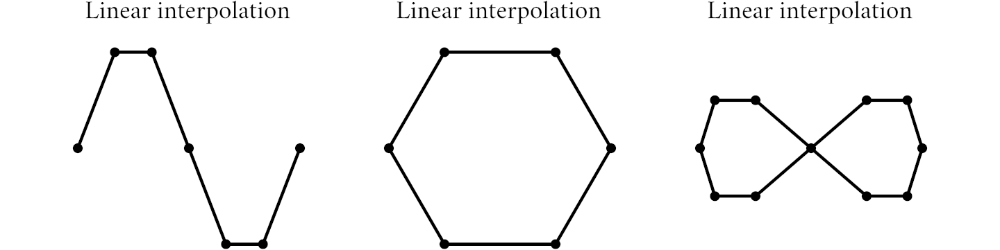
Figure 6.18. Example of the use of linear segments to interpolate a set of points.
Another alternative could be to use a higher-order spline for each segment. For example, we could use \(m / n\) consecutive Bézier splines of \(n\) degree \(\mathbf{p}^n(u, \{ \mathbf{p}_j, ..., \mathbf{p}_{j+n} \})\). The resulting curve is \(\mathcal{C}^1\) continuos, but does not pass through all control points, as shown in Figure 6.19.
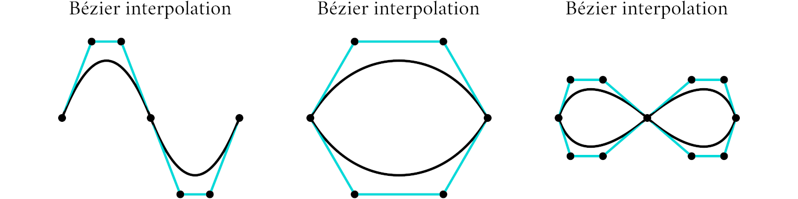
Figure 6.19. Example of the use of cubic Bézier splines to interpolate a set of points.
A better interpolation scheme would be to construct a curve that passes trough all control points, while having smooth tangents across the whole curve. One way to achieve this is to use \(m\) cubic Bézier splines, where the end points of each splines are the original points \(\mathbf{p}_j\) and the inner points are chosen to have continuos tangents. There are many manners in which we can choose tangents. One possibility is to set the tangents at each point \(\mathbf{p}_j\) to be parallel to the segment formed by the points \((\mathbf{p}_{j-1}, \mathbf{p}_{j+1})\) as \(\mathbf{t}_{j} = (\mathbf{p}_{j+1} - \mathbf{p}_{j-1})/2\). This formula is not defined for tangents at the endpoints, since it involves the points \(\mathbf{p}_{-1}\) and \(\mathbf{p}_{m+1}\) that are undefined. We can extend the curve to the endpoints by either repeating the endpoints for open curves, as \(\mathbf{p}_{-1}=\mathbf{p}_{0}\) and \(\mathbf{p}_{m+1}=\mathbf{p}_{m}\), or using the lookup modulo \(m\) for closed curves, as \(\mathbf{p}_{-1}=\mathbf{p}_{m}\) and \(\mathbf{p}_{m+1}=\mathbf{p}_{0}\). The resulting curve, known as the Catmull-Rom spline, is shown in Figure 6.20. We can write the curve explicitly by writing the Bézier spline segments as
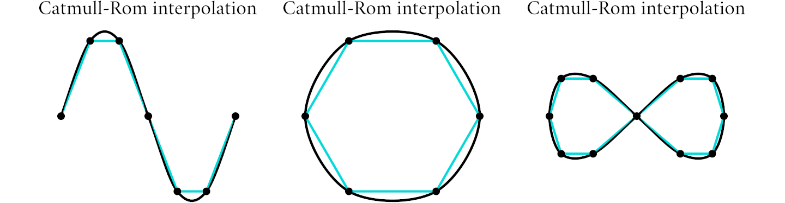
Figure 6.20. Example of the use of Catmull-Rom splines to interpolate a set of points.
Catmull-Rom splines belong to the family of cardinal splines where the tangents are defined as \(\mathbf{t}_{j} = (1-c)(\mathbf{p}_{j+1} - \mathbf{p}_{j-1})/2\). The parameter \(c\), called tension parameter, controls the tangents directions from the linear to the cubic case.
In general, interpolating splines do not find as much used in design application, compared to approximating ones, since they are harder to control. At the same time, they are often used to model and simulate hair and fur where we seek a better interpolation than linear segments for the same number of control points.
6.7. B-Splines (*)
The last family of splines we will consider are B-splines, a name that stands for "basis"-splines. B-splines are approximating curves for a set of \(m+1\) points \(\{ \mathbf{p}_0, ..., \mathbf{p}_m \}\) defined as the weighted sum of the control points scaled by a set of basis functions \(b_i^n(u) = \beta^n(u-i)\) obtained by shifting a kernel \(B^n(u)\) at each integer value \(i\). The B-splines kernel \(\beta^n(u)\) is a piece-wise polynomial of \(n\) degree. We can write B-splines concisely as
We have previously encountered this idea when discussing image reconstruction. The basic premise of B-splines is the same as image convolution that we discussed in the previous chapter. In fact, B-splines can be thought of as discrete-continuos convolutions of the discrete function \(\mathbf{p}[i]\) and the kernel \(\beta^n(u)\), that can be written explicitly as
B-splines basis are defined recursively, so we can compute them for any degree. The base case is a B-spline of degree zero that is defined as a constant function equal to one for \(u \in [0,1)\), and zero otherwise. The B-splines for degree \(n\) are defined as the convolution of the B-splines of degree \(n-1\) with the kernel \(B^0(u)\). We can write the recursive definition as
In this section, we only cover B-spline of up to degree three. We can write the basis functions, plotted in Figure 6.21, as
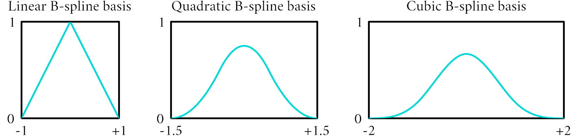
Figure 6.21. Linear, quadratic and cubic B-spline basis functions.
The resulting B-spline segments, shown in Figure 6.22, are affected by the control points in a local manner, similarly to Bézier splines, since they have limited support. For B-splines of degree \(n\) the curve is still affected by only \(n+1\) control points, for any value of \(u\). And, just like Bézier splines, B-splines points are contained in the convex hull of their control points.
TODO: FIX ENDPOINTS OR USE CLOSED CURVES
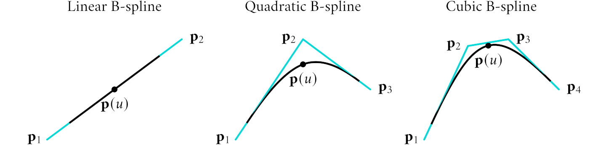
Figure 6.22. Linear, quadratic and cubic B-splines.
B-splines are approximating curves defined for sequences of points. The main advantage of B-splines compared to Bézier splines is that B-splines are \(\mathcal{C}^2\) continuous, from the cubic case on, meaning that they have continuous curvature over all the range, while maintaining the local control, convex hull, and efficiency of Bézier splines. Their main disadvantage is that they do not pass through the control points, if this is desired. Figure 6.23 shows an example of B-splines used to interpolate a set of points.
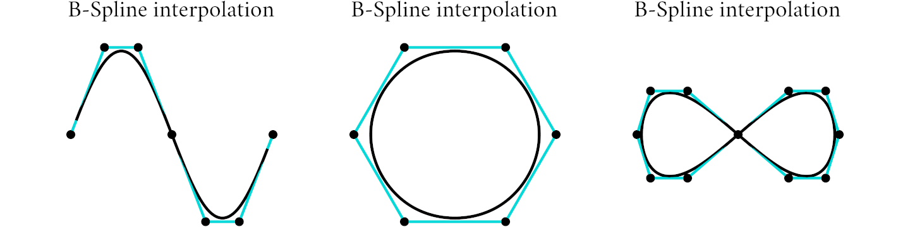
Figure 6.23. Example of the use of cubic B-splines to interpolate a set of points.
The B-splines curves we have presented so far are called uniform B-splines since the control points have all the same weight. A more general formulation allows us to assign different parameters \(u_i\) to each control point. The resulting basis cannot be written as shifted kernels, but are instead defined by the recursive relationship
These non-uniform B-splines are more flexible than uniform ones, but also more complex to adapt to design applications. They allow for changing the parameter range affected by each control points, and also to repeat control points. The latter is useful to make the curve pass through desired control points, and to model discontinuities in the curve, such as sharp corners. These features though require more complex user interfaces to control the curve in design applications, and are harder to handle for data-driven applications, such as simulation.
The most used variant are the non-uniform rational B-splines, NURBS in short, that are defined as the ratio of two non uniform B-splines, where each control point has an associated weight \(w_i\) as
NURBS are the basis of CAD applications and are a generalizations of Bézier and B-splines. Their main advantages are that they are perspective-invariant and can represent conic sections, such as circles, ellipses, and hyperbolas. The main disadvantage is that they are more complex to implement and use, and are less efficient to compute with. We will not cover NURBS in this book, since in graphics they found little use compared to Bézier splines.
6.8. Spline Surfaces (*)
Splines can be extended to represent surfaces by using a tensor product formulation. We will focus on Bézier splines, but the same formulation can be used for other spline families. Let us consider the basis \(b_i^n(u)\) of Bézier splines of degree \(n\). We extend this notation to two dimensions by writing a two-dimensional index as \(\mathbf{i} = (i_1, i_2)\), and a two-dimensional parameter as \(\mathbf{u} = (u_1, u_2)\). We can construct a basis \(b_{\mathbf{i}}^{n}(\mathbf{u})\) for Bézier surface patches by taking the tensor product of the spline basis \(b_i^n(u)\), illustrated in Figure 6.24, as
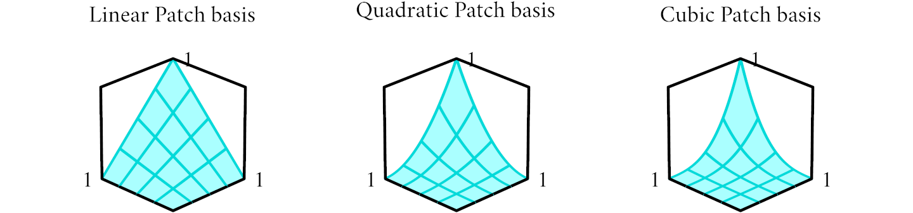
Figure 6.24. Example of Bézier patch basis of degree one to three.
The resulting basis is a set of \((n+1)^2\) functions that can be used to define a surface patch controlled by \((n+1)^2\) control points \(\mathbf{p}_\mathbf{i}\). We show examples of Bézier surface patches in Figure 6.25, and write the surface patch as
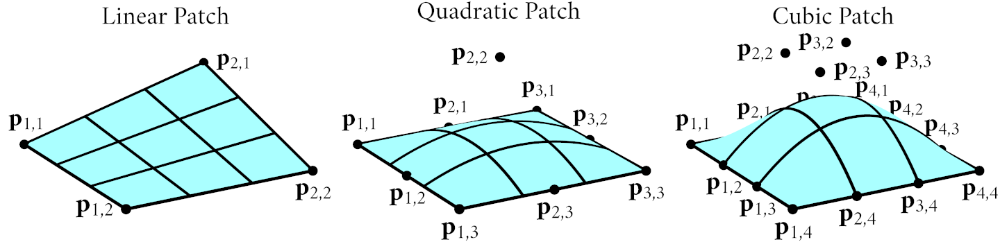
Figure 6.25. Bézier surface patches of degree one to three.
Lines of constant \(u_1\) or \(u_2\) are called isoparametric curves, or isolines for short. Figure 6.25 shows isolines for the displayed patches. For Bézier patches, isoparametric curves are Bézier splines whose control points can be written as
Bézier patches can be combined to form more complex surfaces. We join patches by setting the control points on the boundary of a patch to be equal to the ones on the boundary of an adjacent patch. We can derive constraints on the tangents as well, just like we did for Bézier splines.
Covering splines surfaces in depth is beyond the scope of this book, mostly because they are rarely used in graphics. The main reason is that joining surface patches is not as simple as joining spline curves, since the control points of consecutive patches are not necessarily aligned. This makes it hard to join patches in a smooth manner to form complex surfaces, which is the goal of most design applications. Furthermore, as surfaces are deformed, for example in animation, the constraints imposed by the control points are hard to maintain properly leading to artifacts in the animated shapes. These are the main reasons why NURBS surfaces are rarely used in graphics, while they are the fundamental primitive of CAD applications where some of these concerns are less relevant.
6.9. Subdivision Curves
The spline curves we presented so far are parametric curves where the curve point can be written explicitly in terms of the curve parameter. An alternative representation for smooth curves are the ones defined as recursive refinement of a set of line segments. The main advantage of subdivision curves is that they support complex curve arrangements that are hard to model with splines. The main disadvantage is that they are more expensive to compute with, and are possibly less intuitive to control for designers. In this book, we follow the presentation found in the paper A Factored Approach to Subdivision Surfaces by Joe Warren and Scott Schaefer.
Let us consider a curve represented by a set of line segments. We introduce a subdivision rule \(\text{subdivide}(\mathcal{L})\) that takes as input a line set \(\mathcal{L}\) and outputs a new line sets with more line segments and a smoother shape than the original. Starting from an initial line set \(\mathcal{L}^0\), we recursively apply the subdivision rule to obtain a sequence of line sets \(\{ \mathcal{L}^l \}\) where each line set \(\mathcal{L}^l\) is the result of applying the subdivision rule to the previous line set \(\mathcal{L}^{l-1}\), written as \(\mathcal{L}^l = \text{subdivide}(\mathcal{L}^{l-1})\). This procedure is illustrated in as shown in Figure 6.26. Another way to think about this is that the line set \(\mathcal{L}^l\) is the result of applying the subdivision rule \(l\) times to the initial line set \(\mathcal{L}^0\), written as \(\mathcal{L}^l = \text{subdivide}^l(\mathcal{L}^0)\). We define the subdivision curve \(\mathcal{C}\) as the limit of applying the subdivision rule \(l\) times, with \(l\) that goes to infinity, to a starting line set \(\mathcal{L}^0\), written as
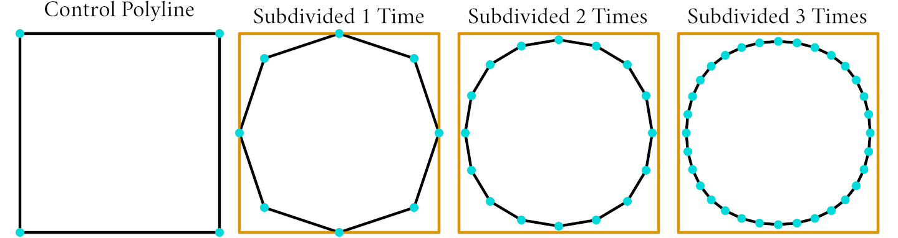
Figure 6.26. A subdivision curve is the limit curve obtained by applying the subdivision rule an "infinite" number of times to an input polyline.
The properties of the subdivision curve depend on the chosen subdivision rule. The most commonly-used subdivision rules are the ones that produce smooth curves of \(\mathcal{C}^2\) continuity. Most subdivision rules are define as two separate steps, illustrated in Figure 6.27: refinement and smoothing. During refinement, new vertices are added by splitting each line segment. During smoothing, the polyline vertices are updated as the weighted average of themselves and their neighbors. Different subdivision rules differ in the number and position of the added vertices, and in the weights used for smoothing.
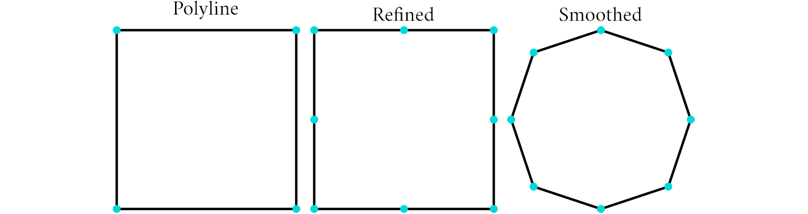
Figure 6.27. A step in the subdivision process. Starting from an input polyline (left), we first refine the line by inserting a point in the middle of each segment (middle). We then smooth the curve by setting each vertex position to a weighted average of its neighbors (right).
In the reminder of this section, we introduce the subdivision rule that produces a limit curve equivalent to a cubic B-spline. We represent a set of lines \(\mathcal{L}=(\mathbf{p}_i, \mathbf{l}_j)\) as an array of vertices \(\mathbf{p}_i\) and an array of lines \(\mathbf{l}_j\). Each line \(\mathbf{l}_j\) is a pair of indices \((l_{j,1}, l_{j,2})\) into the vertex array \(\mathbf{p}_i\). We indicate with \(n_v\) and \(n_l\) the number of vertices and lines respectively. We use this representation since it can represent open and close curves, as well as more complex curve arrangements, called curve networks, as shown in Figure 6.28.
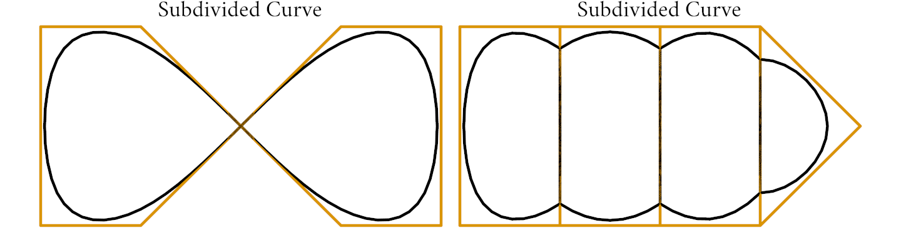
Figure 6.28. Example of a curve network used as input for subdivision curves.
We write the subdivision rule as a function that takes as input a line set \(\mathcal{L}\) and gives as output the smoother line set \(\bar{\mathcal{L}}\). We split the rule into two steps, refinement and smoothing, illustrated in Figure 6.27. During refinement, we keep the original vertices, and in addition insert a new vertex in the middle of each segment, resulting in a new line set \(\hat{\mathcal{L}}=(\hat{\mathbf{p}}_i, \hat{\mathbf{l}}_j)\) with \(n_v + n_l\) vertices and \(2 n_l\) lines. If we write as \(\mathbf{m}_j\) the midpoint of line \(\mathbf{l}_j\), we can write the refined line set as
We then smooth the curve by updating each vertex position as a weighted average of itself and its neighbors, to obtain the final line set \(\bar{\mathcal{L}}=(\bar{\mathbf{p}}_i, \bar{\mathbf{l}}_j)\). The smoothing weights control the shape of the limit curve, and are written as the weighted average of the point being smoothed and the adjacent points. Points are adjacent if there is a line connecting them. We indicate with \(\hat{A}^v_i\) the set of vertices adjacent to vertex \(\hat{\mathbf{p}}_i\), and with \(\hat{A}^l_i\) the set of adjacent lines. We obtain a B-spline as limit curve when we set the weight for the point being smoothed to one-half and the weight for the adjacent points as one-half divided by the number of adjacent points. The exception to this rules are end points that would shrink if treated this way. Instead, we lock end points in place to avoid shortening open lines. As for the line segments, these are not changed from the refinement step, so we can write them as \(\bar{\mathbf{l}}_j= \hat{\mathbf{l}}_j\). The smoothing step can then be written as
The previous equation can in fact be written in a more elegant way by observing that the weighted average of vertex positions can be written as the unweighted average of the adjacent lines' midpoints \(\hat{\mathbf{m}}_j = \tfrac{1}{2} \hat{\mathbf{p}}_{\hat{l}_{j,1}} + \tfrac{1}{2} \hat{\mathbf{p}}_{\hat{l}_{j,2}}\) as
In the previous formulation, we can force the curve to go through some of the original points by locking their position during the smoothing step. This is used to model sharp corners in the curve. We can easily extend the previous formulation to support corners by explicitly tagging vertices as corners. During smoothing, the corner vertices are locked in place, behaving as end points. An example of corner vertices is shown in Figure 6.29.
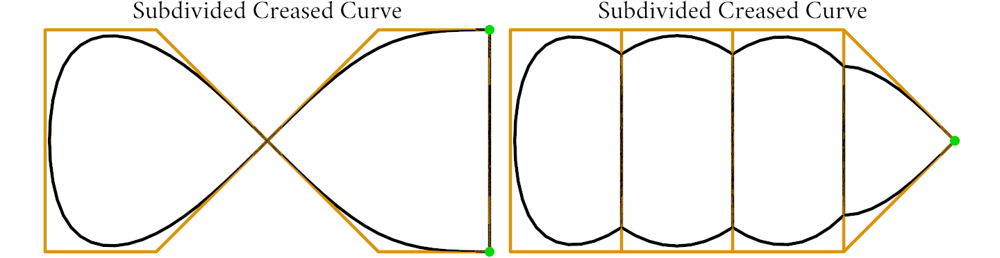
Figure 6.29. Subdivision curve with tagged corner vertices.
6.10. Subdivision Curves Implementation (*)
Subdivision rules are known to be hard to implement. The main reason is that they require to carefully track vertex and line indices, to compute adjacent sets, and to model the relationship between original and refined indices. We present here a sketch of a possible implementation split between refinement and smoothing. In this sketch, we try to simplify the tracking of indices by keeping vertices of different type grouped together.
In the refinement step, we split segments in two by adding a new vertex in the middle of each line segment. We implement refinement by first adding two sets of vertices, one corresponding to the original vertices, and one created by adding a vertex in the middle of each line segment. We add the two sets separately, so that vertices \(\hat{\mathbf{p}}_i\) with \(i < n_v\) correspond to the original vertices \(\mathbf{p}_i\), while vertices \(\hat{\mathbf{p}}_i\) with \(i = n_v+j\), hence \(i \geq n_v\) correspond to the midpoint of lines \(\mathbf{l}_j\). We then create the line indices by adding two line segments for each original line, using the vertex indices from the two sets. We sketch here the pseudo-code for the refinement step:
In the smoothing step, we set each vertex position to the average of the midpoints of all lines adjacent to the given vertex. The naive way to implement this is to loop over vertices and then over lines. But this leads to a quadratic algorithm that is prohibitive for all but the simplest cases. Instead, we can compute the same average by looping over lines once and updating the position of the each vertex by the line midpoint. We sketch the pseudo-code for the smoothing step here:
6.11. Subdivision Surfaces
The most common representation for smooth surfaces in many graphics applications are subdivision surfaces. A subdivision surface is obtain by repeatedly applying a subdivision rule to a polygon mesh, in a manner similar to what we have shown for subdivision curves. Subdivision surfaces are defined for both quad and triangle meshes, with the most common use case being quad meshes. Just like before, our presentation is based on the paper A Factored Approach to Subdivision Surfaces by Joe Warren and Scott Schaefer.
When rendering with subdivision surfaces, we need to be able to evaluate the surface position and normal at any point on the surface. While there are methods to compute the surface position and normal analytically, they are too complex for this introduction text. Instead, we will use a simpler approach where we compute the surface positions by applying the subdivision rule up to a desired level of detail, and then compute smooth normals from the surface mesh. An example of rendering with a subdivision surface is shown in Figure 6.30.
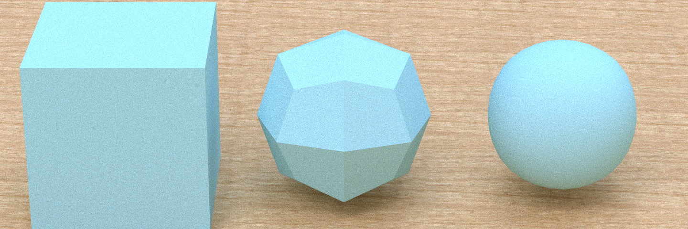
Figure 6.30. A subdivision surface (left), subdivided once (middle), and three times (right). The latter surface is rendered with per-vertex normals. Environment and textures courtesy of PolyHaven.
Let us consider a surface represented as a set of faces, organized in an indexed meshes. We introduce a subdivision rule \(\text{subdivide}(\mathcal{M})\) that takes as input a mesh \(\mathcal{M}\) and outputs a new mesh with more faces and a smoother shape than the original. Starting from an initial mesh \(\mathcal{M}^0\), we recursively apply the subdivision rule to obtain a sequence of meshes \(\{ \mathcal{M}^l \}\) where each mesh \(\mathcal{M}^l\) is the result of applying the subdivision rule to the previous mesh \(\mathcal{M}^{l-1}\), written as \(\mathcal{M}^l = \text{subdivide}(\mathcal{M}^{l-1})\). This is illustrated in Figure 6.31. We define the subdivision surface \(\mathcal{S}\) as the limit of applying the subdivision rule \(l\) times, with \(l\) that goes to infinity, to a starting mesh \(\mathcal{M}^0\), written as
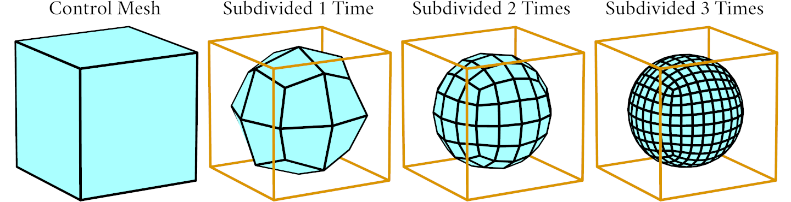
Figure 6.31. A subdivision surface is the limit surface obtained by applying the subdivision rule an "infinite" number of times to an input mesh.
Subdivision surfaces differ in the choice of subdivision rule used and whether they are based on quad or triangle meshes. In this book, we focus on the Catmull-Clark subdivision rule for quad meshes, since it is the most commonly used in graphics. Subdivision rules work in two steps, illustrated in Figure 6.32: refinement and smoothing. In mesh refinement, we add vertices and faces to the mesh to increase its resolution. We split each quad in four by inserting a vertex in the midpoint of each edge and a vertex in the centroid of each face. Refinement is followed by mesh smoothing, where the vertices of the subdivided mesh are moved to new locations to make the surface smoother. The new smoothed vertex positions are computed as a weighted average of the positions of its adjacent vertices. The weights determine the shape of the final surface.
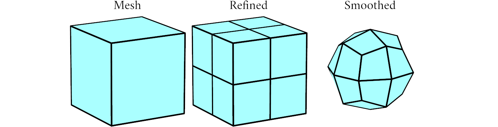
Figure 6.32. A step in the subdivision process. Starting from an input mesh (left), we first refine the mesh by splitting each face in four faces (middle). We then smooth the mesh by moving each vertex to a weighted average of its neighbors (right).
We represent a mesh \(\mathcal{M}=(\mathbf{q}_j, \mathbf{p}_i)\) as a set of quads \(\mathbf{q}_j\) and a set of vertices \(\mathbf{p}_i\). Each quad is represented as four indices \((q_{j,1}, q_{j,2}, q_{j,3}, q_{j,4})\) into the vertex array \(\mathbf{p}_i\). We write the subdivision rule by splitting refinement and smoothing, as illustrated in Figure 6.32. In the refinement step, we split each face into four quads by inserting a vertex in the midpoint of each edge, and a vertex in the centroid of each quad. We indicate with \(\mathbf{e}_k\) the set of edges, represented as pairs of indices \((e_{k,1}, e_{k,2})\) into the vertex array \(\mathbf{p}_i\). The refined mesh \(\hat{\mathcal{M}}=(\hat{\mathbf{q}}_j, \hat{\mathbf{p}}_i)\) has \(n_v + n_e + n_f\) vertices and \(4 n_f\) faces, where \(n_v\), \(n_e\), \(n_f\) are the number of vertices, edges and faces of the original mesh. In the following equations, we indicate with \(\tilde{e}(i,j)\) the index of the edge that connects vertices \((i, j)\). If we write an edge midpoint as \(\mathbf{m}_k\), and a face centroid as \(\mathbf{c}_j\), the refinement step can be written as
In the smoothing step, we differentiate between two cases: internal vertices that have in the surface interior, and boundary vertices that are on the surface boundary. For internal vertices, we compute the new vertex position as the average of the adjacent face centroids. For boundary vertices, we compute the new vertex position as the average of the adjacent edge midpoints. This definition would give us a smooth surface, with \(\mathcal{C}^2\) continuity, in all cases but around the interior vertices that have more than four neighboring faces, where the surface is only \(\mathcal{C}^1\). In these cases, we can ameliorate the problem by correcting the average based on the number of neighboring faces, as shown in Figure 6.33. We also include the case of vertices marked by users to be corners, that are locked in place during smoothing. If we indicate as \(\hat{A}^f_i\) the set of faces adjacent to vertex \(\mathbf{p}_i\), and with \(\hat{A}^e_i\) the set of edges adjacent to vertex \(\mathbf{p}_i\), we can write the smoothing step as
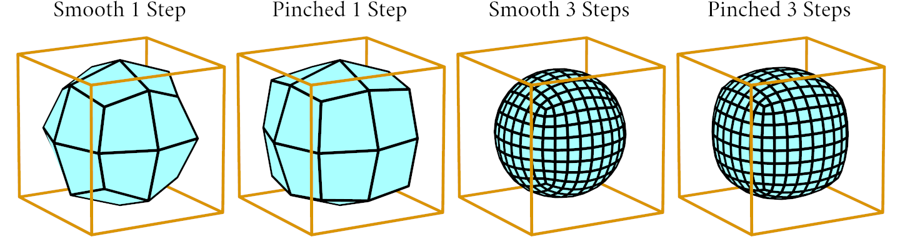
Figure 6.33. Effect on correction during smoothing for vertices with more than four neighboring faces. The correction is proportional to the number of neighboring faces.
The subdivision rule presented above can handle any polygon as input, since during refinement a polygon of any number of vertices can be split into quads by splitting the polygon edges and inserting a vertex in the centroid of the polygon, as shown in Figure 6.34. After subdivision, all faces are quads, so the smoothing step remains the same.
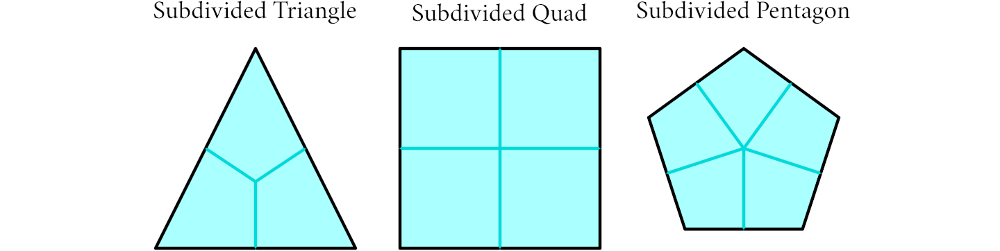
Figure 6.34. Catmull-Clark subdivision supports all input polygons by splitting them into quads.
In the previous formulation, we can tag vertices as corners to force the surface to go through some of the original points by locking their position during the smoothing step. We can also tag edges as creases to introduce sharp lines on the surface. During smoothing, corner vertices are locked in place, while creased edges are treated as boundary edges. An example of creasing is shown in Figure 6.35.
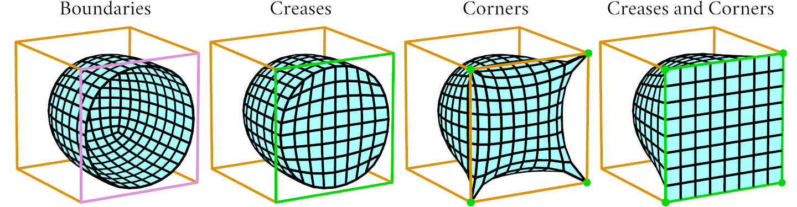
Figure 6.35. Examples of corner vertices and creased edges.
6.12. Subdivision Surfaces Implementation (*)
Just like subdivision curves, subdivision surfaces are known to be hard to implement, so we here a sketch of a possible implementation to clarify the reader. One complication found when subdividing meshes is that we need to ensure that faces that share an edge use the same edge vertex during refinement. If we duplicate edge vertices, we would introduce a thin crack in the surface that would not subdivide properly any longer. The easiest way to do this is the generate a list of edges without duplication, and have a function that returns the edge index given the edge end points. This can be done by either using a dictionary keyed by the edge indices, or by sorting the edge endpoints, removing duplicates, and using binary search to get the edge index. In the reminder of this section, we indicate with \(\tilde{e}(i,j)\) the edge index corresponding to the pair of vertices \((i, j)\). Also, for simplicity of notation, we consider here only quads as input.
In the refinement step, we split each face into four by adding a new vertex in the middle of each edge and a new vecrtex in the centroid of each face. We implement refinement by first adding three sets of vertices, corresponding to the original vertices, the edge vertices and the face vertices. We add the sets separately, so that vertices \(\hat{\mathbf{p}}_i\) with \(i < n_v\) correspond to the original vertices \(\mathbf{p}_i\), vertices \(\hat{\mathbf{p}}_i\) with \(i = n_v+k\) correspond to the edges \(\mathbf{e}_k\), and vertices \(\hat{\mathbf{p}}_i\) with \(i = n_v+n_e+j\) correspond to the faces \(\mathbf{q}_j\), We then create the quad indices following the equations reported in the previous section. We sketch a pseudo-code for the refinement step below:
In the smoothing step, we set each vertex position to either the weighted average of neighboring face centroids, for interior points, or the weighted average of neighboring edges, for boundary vertices. We also include the case of corner vertices that are locked in place during smoothing. We sketch a pseudo-code for the smoothing step below:
The implementation reported here is quite comprehensive, but it is not the most efficient. Still, we can use to generate subdivision surfaces for rendering, as shown in Figure 6.36.
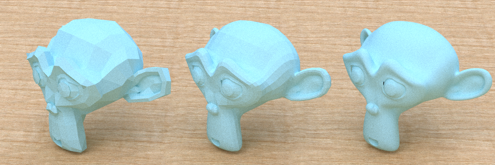
Figure 6.36. Subdivision surfaces rendered as control mesh, faceted surface and smoothed surface.
The implementation we presented also supports texture coordinates generation. In general, textured meshes have discontinuities in the mapping function. In indexed meshes this is represented by duplicating vertices along texture seams. This duplication though cannot be used in subdivision surfaces, since it would introduce cracks in the surface. Instead, we store different quad indices for positions and texture coordinates. In this manner, we can represent discontinuities in one value but not in the other. When performing subdivision, we subdivide each quantity separately with the same algorithm shown above. This is illustrated in Figure 6.37 and shown for rendering in Figure 6.38.
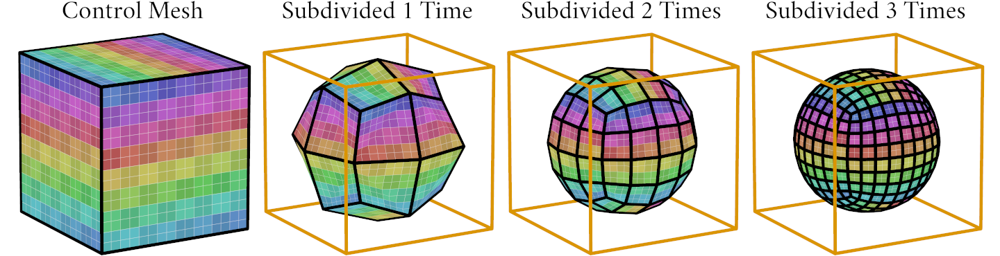
Figure 6.37. A subdivision surface with texture coordinates. To handle texture discontinuities, we store and subdivide a separate mesh that has texture coordinates as vertices and quads that represent discontinuities in the texture mapping function.
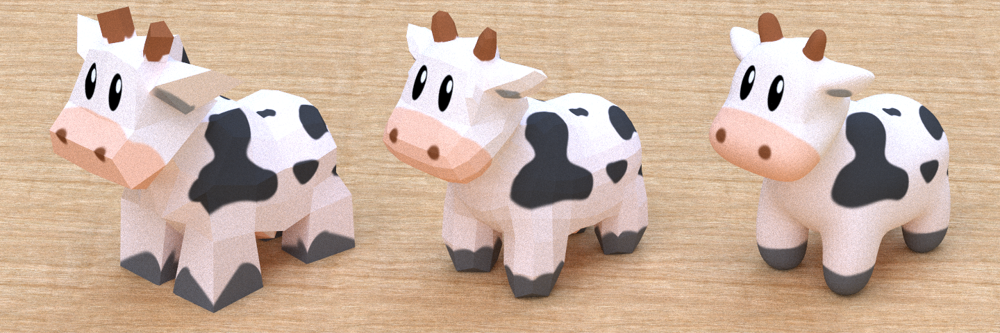
Figure 6.38. A subdivision surface with texture coordinates. Model courtesy of Keenan Crane.
6.13. Displacement and Normal Mapping (*)
The smooth surface formulations we have introduced so far have many benefits in modeling applications, but produce surfaces that appear not realistic since they lack small geometric details such as scratches, crevices, wrinkles, etc. In a way, this is the same concern we had for surface materials when we introduced textures.
One possibility we have is to use a displacement texture to perturb the position of the subdivided vertices. The value stored in the texture represent the height with which we have to translate a vertex along its normal. An image rendered with displacement mapping is shown in Figure 6.39. If we indicate with \(H\) a gray-scale displacement texture, and with \(\mathbf{s}\) the texture coordinates, we can write the displaced positions as
For shading computation, we need to evaluate the normal of the displaced surface. We can do so by deriving the displaced position with respect to the texture parameters, and normalizing the resulting vector. This derivation allows us to write the displaced normal as perturbation of the surface normal expressed in the tangent frame \(\mathbf{F}=[\mathbf{t}_1, \mathbf{t}_2, \mathbf{n}, \mathbf{p}]\) at \(\mathbf{p}\). The tangent frame is a frame centered at the surface point, and whose orientation is specified by the tangents \(\mathbf{t}_1\) and \(\mathbf{t}_2\) and the surface normal \(\mathbf{n}\). The tangents are the derivatives of the surface position with respect to the two texture coordinates. Their use aligns the tangent frame to the orientation of the texture image at the shading location. With this notation, we can write the displaced position as
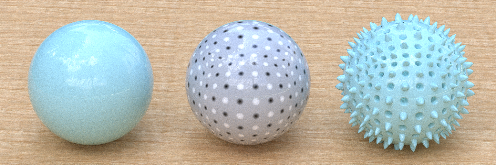
Figure 6.39. We add geometric details to a smooth surface (left) by translating each vertex along the corresponding normal by a quantity stored in a texture called displacement map (middle). The resulting surface (right) has finer geometric details that affect the look of the shaded surface, its shadowing and its silhouette.
One concern that arises with displacement mapping is that many small primitives are added to get fine details. This increase in geometric complexity may be problematic if we desire fast rendering times. In fact, this is the very reason why we introduced textures in the first place. For these reasons, many real-time applications use textures that perturb just the surface normals, without changing the surface geometry. In this manner, fine shading details are represented, since shading depends on the normal direction, without the need to generate many small faces. The drawback of normal mapping is that details are still missing in the objects silhouette and the surface shadows, but this may be acceptable for certain applications. The most commonly used method to perturb normals is normal mapping. Normal maps are textures that store the perturbation of the normal in the tangent frame of the shaded point. An image rendered with normal mapping is shown in Figure 6.40. If we write with \(\mathbf{N}\) the normal map, we can write the perturbed normals as
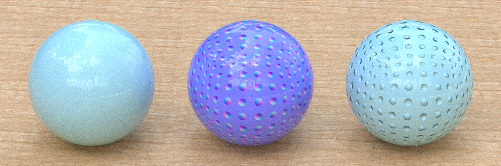
Figure 6.40. We add shading details to a smooth surface (left) by perturbing the surface normal by a vector stored in a texture called normal map (middle). The resulting surface (right) has finer shading details, but lack geometric details in shadows and silhouette.
For indexed meshes, we can compute the displaced position one vertex at a time by simply shifting each vertex along its normal, where the displacement map is looked up at the vertex texture coordinates, as \(\mathbf{p}^d_i = \mathbf{p}_i + H(\mathbf{s}_i) \mathbf{n}_i\). Displaced normals can be computed by discretizing the normal computation written above, or by computing the smoothed normals for the whole displaced surface by averaging the face normals of the subdivided mesh.
For normal mapping, we need to compute the tangent frame at each shaded point. In the case of triangle meshes, we can compute the tangent frame by using the triangle edges as the two tangent vectors. The normal is then the cross product of the two edges. The shading normal is than computed by looking up the normal map at the texture coordinates of the shaded point, and transforming the normal to the world coordinate frame. To do so, we first drive the tangents that align the local point to the texture image, by writing the points on a triangle \(\mathbf{p}(\mathbf{s})\) in terms of one of its vertices \(\mathbf{p}_0\), its texture coordinates \(\mathbf{s}_0\), and the two unknown tangents \(\tilde{\mathbf{t}}_1\) and \(\tilde{\mathbf{t}}_2\) as
We now impose the constraints that the other two triangle vertices, \(\mathbf{p}_1\) and \(\mathbf{p}_2\), can be written with respect to their texture coordinates, \(\mathbf{s}_1\) and \(\mathbf{s}_2\), as
This is a linear system of six equations, since we have two vector equations, in six unknowns, the coordinates of the two tangent vectors. We can rewrite this in matrix notation as
The tangents derived in this manner are not orthogonal to each other nor to the surface normal, since their directions depend on the texture coordinates which are independent of each other and of the vertex positions and normals. To treat it as a frame, we need to define two orthogonal axes from these tangents. We set the first axis as one tangent made orthogonal to the normal, and the second axis as the cross product between the first axis and the normal, but with the sign determined by the second tangent.
6.14. Implicit Curves and Surfaces (*)
The representations of curves and surfaces we have introduced so far are in the family of explicit representations, since they define shapes by explicitly writing the positions of each point, guided by a set of control points. A less used representations for curves and surfaces are implicit representations. In these representations, we write closed curves \(\mathcal{C}\) in two dimensions and closed surfaces \(\mathcal{S}\) in three dimensions as the points for a which a \(f\) is zero. This set of points is called the zero level set of the function. In implicit representations, shape points are not written directly, but need to be determined by solving the previous equation. We can write implicit curves and surfaces as
Implicit representations are sometimes used in modeling applications since they make it easy to construct complex shapes by combining simpler ones, and since they in these representation curves and surfaces are always well-formed. This is in contrast with explicit representation, where control points need to be carefully chosen to ensure that the resulting shapes are valid. At the same time, implicit representations are less suited to model deformations since we cannot directly alter the surface, as we would do by changing the control points of an explicit representation. Since most properties of implicit representations works in the same manner for curves and surfaces, we will focus on surfaces in the following presentation.
A useful implicit representation is the signed distance function of a shape, written as SDF for short. The signed distance function \(s(\mathbf{p})\) is the signed distance of a point \(\mathbf{p}\) from the closest point on the shape, where the sign indicates whether the point is inside or outside the shape. We can write this succintly as
Signed distance functions can be computed analytically for many shapes, as shown in Figure 6.41. Inigo Quilez keeps a list of analytic SDFs for two-dimensional and three-dimensional shapes. For example, the SDF for a circle of radius \(r\) centered at \(\mathbf{c}\) can be written as \(s_\text{circle}(\mathbf{p}) = \|\mathbf{p} - \mathbf{c}\| - r\).
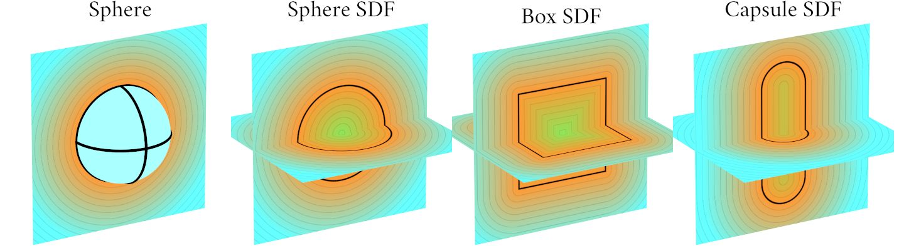
Figure 6.41. Example of analytic signed distance functions.
One of the main advantages of signed distance functions is that boolean operations between shapes can be computed by combining the signed distance functions of the shapes. In particular, the signed distance functions of the union, intersection and difference of two shapes, shown in Figure 6.42, can be computed as
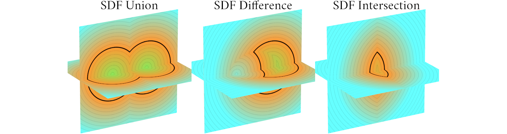
Figure 6.42. Signed distance functions for boolean operations.
In many situations, a designer might want to merge shapes together with smoother transitions. This can be achieved by changing the boolean operations above with smooth minimum and maximum functions, as shown in Figure 6.43. These functions are just one possible choice, and other functions can be used to achieve different effects. The smooth minimum and maximum functions are defined as
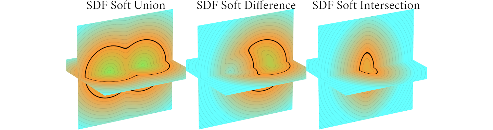
Figure 6.43. Signed distance functions for boolean operations with smooth transitions.
The ability to easily combine shapes with boolean operations and smooth transitions makes signed distance functions helpful in procedural modeling, where shapes are specified by writing programs, as well as in modeling applications for novice users, where shapes can be quickly prototyped with simple user interfaces. Performing boolean operations on meshes is a much more complex task, and still an open area of research.
When rendering shapes defined by signed distance functions, we first convert them to polygonal meshes. This is done by sampling the SDF on a regular grid, and generating a mesh that approximates the zero level set of the SDF. There are several methods to do so, including marching cubes and dual contouring. These methods differs in the assumptions they make on the reconstructed surface, and in the quality of the resulting mesh. Covering these methods is beyond the scope of this book, but we refer the interested reader to the original papers.
An alternative rendering method is to raytrace signed distance functions directly. We can pose this problem as a root finding problem, where we want to find the smallest ray parameter \(t\) such that the ray point \(\mathbf{p}(t) = \mathbf{e} + t \mathbf{d}\) is on the surface. We can test whether a point is on the surface by checking whether the signed distance function is zero, \(s(\mathbf{p}(t)) = 0\). In short, we can write
For simple analytic SDF, we can solve this problem analytically by substituting the ray equation into the SDF, and solving for \(t\). For more complex SDFs, an analytical solution may not be available, and we need to resort to numerical methods. The easiest method to implement is ray marching, where we sample the ray at regular intervals, and stop when the SDF changes sign. This is shown in Figure 6.44, and sketched in pseudo-code as
Figure 6.44. Ray marching a signed distance function.
Ray marching is easy to implement, but it is not very efficient. In fact, it requires a large number of samples to get a good approximation of the surface, and it is not guaranteed to converge to the correct solution. These issues stems from the fact that we use a constant \(\Delta t\) to increment the ray parameter. A better alternative is sphere tracing, where we use the SDF to estimate the distance to the surface, and use this estimate to increment the ray parameter. This is shown in Figure 6.45, and sketched in pseudo-code as
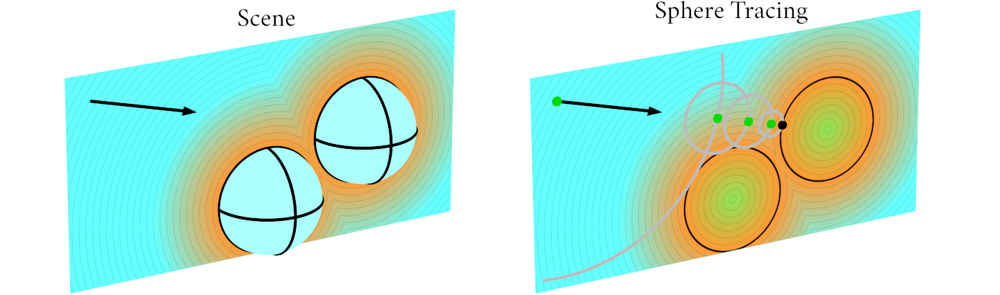
Figure 6.45. Sphere tracing a signed distance function.
6.15. Noise Functions (*)
In the previous sections we have introduced methods to perturb a smooth surface via displacement and normal mapping, as well as the basic primitives used in procedural modeling. In these cases, we often want to add small perturbations to a surface to make it look more realistic, approximating the small geometric details that are present in real-world objects. If measured surfaces are not available, we can use noise functions to generate these small perturbations. Noise functions are functions that generate patterns that appear stochastic, but are reproducible so that they can be applied to a surface and produce the same result each time. We present noise functions following the presentation by Andrew Kensler.
The stochastic appearance of noise functions is achieved by taking a set of random values \(\mathbf{h}_\mathbf{i}\), defined over the integer lattice \(\mathbf{i} \in \mathbb{Z}^3\), and interpolating these values to produce a smooth function. The random values are generally defined as a hash function \(\mathbf{h}(\mathbf{i})\) of the integer coordinates \(\mathbf{i}\), which maps each point in space to a random value. If the hash function produces well-distributed values, then the noise function will appear stochastic.
The simplest noise function is value noise, which is defined as the discrete-continuos convolution of the random values \(\mathbf{h}_\mathbf{i}\) with a smooth kernel \(g(\mathbf{p})\). Figure 6.46 shows the kernel function, random values and the resulting value noise function. The value noise function is written as
The kernels used in noise functions are symmetric, with \(g(\mathbf{u}) = g(-\mathbf{u})\), since the resulting patterns should be as isotropic as possible. Also, for efficiency reasons, the kernels have limited support. For the noise functions discussed in this section, the kernels are zero outside a unit interval centered at the origin, a condition we can write as \(g(\mathbf{u}) = 0 \text{ if } \mathbf{u} \notin [-1,1]^n\). Taking advantage of the limited support, we can write the noise function as the sum over the set of neighboring integer coordinates \(\mathbf{n}(\mathbf{u}) = [\lfloor \mathbf{u} \rfloor -1, \lfloor \mathbf{u} \rfloor +1]\) as
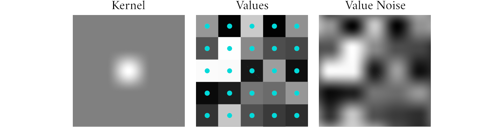
Figure 6.46. Value noise with kernel and random values.
The kernel is often written as the product \(g(\mathbf{u})=\prod_i g(u_i)\) of one-dimensional functions \(g(u)\). The most common choice for \(g(u)\) is a cubic polynomial \(g(u)=1-(3|u|^2-2|u|^3)\) with \(u \in [-1,1]\), derived from the smoothstep function \(s(u) = 3 u^2 - 2 u^3\), as \(g(u) = s(1 - |u|)\). The smoothstep \(s(u) = 3 u^2 - 2 u^3\) with \(u \in [0, 1]\) is a cubic polynomial often used in procedural modeling to provide a smooth transition between two values. An alternative is to use a quintic polynomial \(s(u)=6u^5-15u^4+10u^3\) that has continuous second derivatives. Figure 6.47 plots the kernel functions, that we summarize as
Figure 6.47. Kernel functions used in value noise.
Value noise is not used often since the variations in the random values \(\mathbf{h}_\mathbf{i}\) make the noise function oscillate too rapidly. A better alternative is to use gradient noise, which is defined as the discrete-continuos convolution of the gradients \(\mathbf{d}_\mathbf{i} \cdot (\mathbf{u} - \mathbf{i})\) of the random directions \(\mathbf{d}_\mathbf{i}\) with a kernel \(g(\mathbf{p})\). To keep the noise values in the \([0,1]\) range, we normalize the gradients by scaling and shifting them by one-half. The kernel is the same used in value noise, while the random directions are defined as a hash function of the integer coordinates \(\mathbf{i}\). Figure 6.48 shows the kernel function, random directions and the resulting gradient noise function.
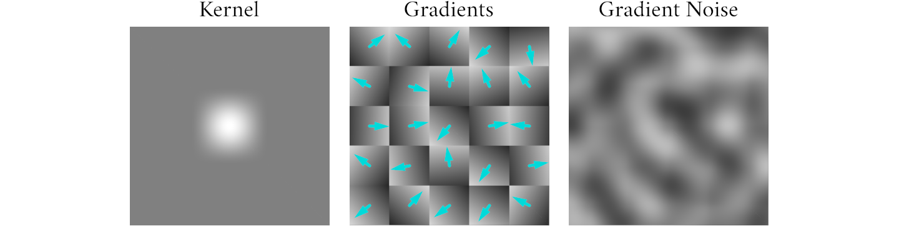
Figure 6.48. Gradiance noise with kernel and random directions.
An improved variant of gradient noise is simplex noise that uses a simplectic grid instead of a cubic grid. The simplectic grid is a regular grid where each cell is a simplex, i.e. a triangle in two dimensions and a tetrahedron in three dimensions. The simplex grid is constructed by taking the integer grid and shifting each cell by one-half along each axis.
Another family of noise functions, called cell noise, is derived by taking the distance of the point \(\mathbf{u}\) from a set of points \(\mathbf{u}_\mathbf{i}\), one for each integer grid cell \([\mathbf{i}, \mathbf{i}+1]\) choosen at random from a hash function of the integer coordinates \(\mathbf{i}\). The cell noise is defined as the distance from the closest point. Figure 6.49 shows the grid points and the resulting cell noise functions. We can write the cell noise as
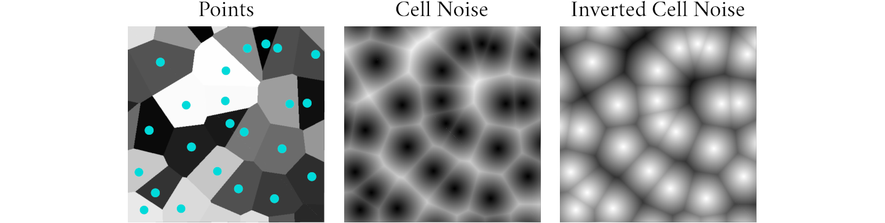
Figure 6.49. Cell noise with grid points.
The noise functions presented so far can be manipulated to obtain different noises. For example, a noise function can be shifted, scaled and rotated by transforming the input point \(\mathbf{u}\) before evaluating the noise function. Examples of these transformations are shown in Figure 6.50.
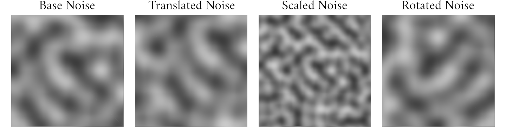
Figure 6.50. Transformations of noise functions.
Noise functions can be combined to obtain more complex noises. For example, we multiple scaled noise functions can be combined to obtain fractal noises, where the highest frequency base noises have descreasing amplitudes. Depending on how we combine the base noises, we can obtain fractal noises. Figure 6.51 shows examples of the fractal noises that written as
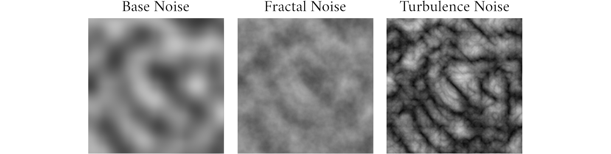
Figure 6.51. Fractal noise and ridge noise.
The same variations can be applied to cell noise, and in fact many other noise functions. Figure 6.52 shows examples of these noises.
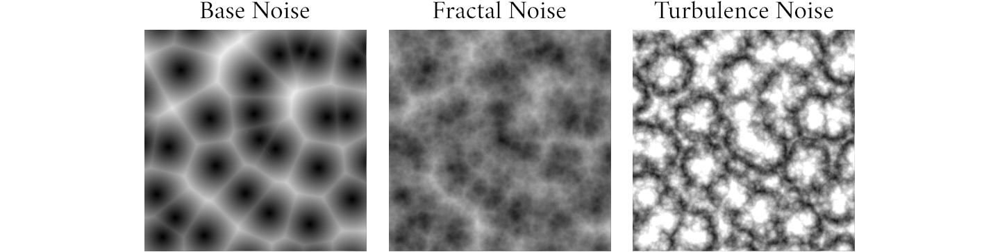
Figure 6.52. Fractal variations of cell noise.